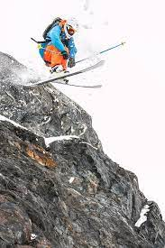
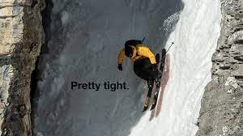

According to the Freeride World Tour IT’S A VERTICAL FREE-VERSE POEM ON THE MOUNTAIN. IT’S THE ULTIMATE EXPRESSION OF ALL THAT IS FUN AND LIBERATING ABOUT SLIDING ON SNOW IN WINTERTIME.
Here is a Freeride World Tour Video that explains freeriding in more detail
He is known for his creative freestyle skiing movies and professional accomplishments. His first notable jump was at Chad's Gap, a massive transfer jump of 120 feet (37 m) from take-off to landing over a 40 feet (12 m) deep gully in Alta, Utah, US. His point of view videos routinely go viral on the internet and are viewed by tens of millions. He is widely considered to be one of the best freeskiers in the history of the sport.

Winter Sports, Inc. (WSI) formed 77 years ago in 1947 as a public company of community shareholders, opened Big Mountain that December 14. It hosted the U.S. Alpine Championships in early March 1949, where future Olympic champion Andrea Mead of Vermont won all three women's titles at age sixteen. The mountain originally had a single T-bar, which was replaced by chairlifts installed in 1960, and 1968.
After sixty years, it was renamed "Whitefish Mountain Resort" in June 2007; by then the ski area had expanded to include ten chairlifts.
Olympic champion Tommy Moe (b.1970) learned to ski and race at the mountain, where his father was on the ski patrol. Moe won the gold medal in the downhill and the silver in the super-G at the 1994 Winter Olympics in Lillehammer, Norway.
The mountain again hosted the U.S. Alpine Championships in 2001.[4] That event is remembered for the failed comeback attempt, and life-altering crash, of 1984 Olympic downhill champion Bill Johnson.